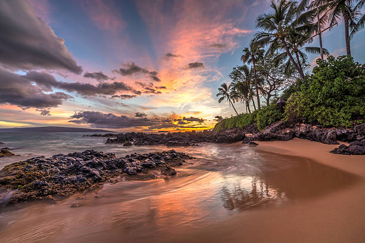

Hawaiian Culture

Maui is one of the islands located on Hawaii. It is known as the Valley Isle and includes many beaches, forms of wild-life, and nature. It is the place to go when you just want to get away.
Traditions
A few traditions you may see in Maui!
Lei
- A lei represents a symbol of Hawaii. It can be made up of flowers, feathers, shells, seeds, or ivory. They are usually worn on the top of the head or around the neck. Leis used to be ceremonial but are now used to welcome guests into Hawaii.Hula
- Hula is an artform performed for entertainment, religious purposes, and for historical events. The art of Hula requires a huge amount of training and techinical skill. It is taught by kumu.
Beliefs & Facts
Here are some interesting stories including history about the island!
Ea Mau Hawaiinuiakea
-
Ea Mai Hawaiinuiakwa are chants that speaks of the birth of the islands and descendants of Haloa, a Hawaiian god, also known as the first Hawaiian. Puuloa's Keeper
-
Hawaiians believe in evironmental stewardship and practice beneficial relationships with forces of nature. For example, they believed in legendary sharkes protecting the people of Puuloa, this was Pearl Harbor. The Race of the Goddesses
-
In Hawaii, nature's extremes are seen and understood as forces of gods and goddesses. Volcanic fire and snow upon the islands are examples of nature's extremes.